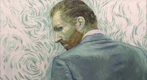
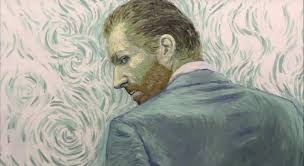

Alcune informazione sul pittore olandese
Vincent Willem Van Gogh nasce il 30 marzo 1853 a Groot Zundert ed ebbe, a causa della sua estrema sensibilità di artista, una vita molto tormentata. Figlio di un pastore protestante, mentre ancora vive a Zundert, Vincent esegue i suoi primi disegni. Inizia invece le scuole a Zevenbergen. Impara il Francese, l'Inglese, il Tedesco e per la prima volta inizia a dipingere. Terminati gli studi, va a lavorare come impiegato nella succursale della casa d'arte parigina Goupil e Cie, successivamente nelle sedi dell'Aja (dove compie frequenti visite ai musei locali), di Londra e di Parigi. Nel maggio del 1875 viene definitivamente trasferito a Parigi. Il trasferimento nella città francese, dove già risiede il fratello Theo, segna l'inizio del periodo appunto francese, interrotto solo da un breve viaggio ad Anversa alla fine dello stesso anno. Molto del suo tempo lo spende assieme al fratello e i due, da quel momento, iniziano una corrispondenza che durerà tutta la vita e che rappresenta ancora oggi il mezzo migliore per studiare le opinioni, i sentimenti lo stato d'animo e la pittura di Vincent. Durante il soggiorno parigino Vincent Van Gogh scopre la pittura impressionista e approfondisce l'interesse per l'arte e le stampe giapponesi. Conosce molti pittori tra cui Toulouse Lautrec e Paul Gauguin che apprezza particolarmente. La loro sarà una relazione assi turbolenta, con esiti anche drammatici, come testimonia il famoso episodio del taglio dell'orecchio (si suppone infatti che Vincent abbia assalito Gauguin con un rasoio. Fallito l'attacco, in preda ad una crisi di nervi, si taglia il lobo dell'orecchio sinistro). Intanto, il rendimento di Vincent alla Goupil & Cie si deteriora mentre, allo stesso tempo, la sua dedizione agli studi biblici raggiunge un livello ossessivo. Dopo essersi dimesso da Goupil al principio della primavera, si reca a Ramsgate, in Inghilterra, dove viene assunto in un piccolo collegio. Più avanti nel corso dell'anno Vincent assume un nuovo incarico quale insegnante e coadiutore presso il Reverendo T. Slade Jones, un pastore Metodista. Il 29 Ottobre Vincent pronuncia il suo primo sermone domenicale. Man mano che il fervore religioso di Vincent aumenta, il suo stato di salute fisico e mentale volge al peggio. Il 1880 è un punto di svolta nella vita di Vincent Van Gogh. Abbandona i suoi propositi religiosi e si dedica esclusivamente a dipingere poveri minatori e tessitori. Theo inizia ad appoggiarlo finanziariamente, una situazione che si protrarrà fino alla fine della vita di Vincent. Più tardi nel corso dell'anno, intraprende studi formali di anatomia e prospettiva all'Accademia di Bruxelles. Incontra Clasina Maria Hoornik (detta "Sien"), una prostituta gravata fra l'altro dal mantenimento di una figlia di cinque anni ed incinta di un altro figlio. Mentre continua i suoi studi e dipinge in compagnia di alcune nuove conoscenze, il suo stato di salute va nuovamente deteriorandosi, tanto da dover essere ricoverato in ospedale per gonorrea. Una volta dimesso, inzia alcune sperimentazioni pittoriche e, dopo più di un anno trascorso insieme, pone termine alla sua relazione con Sien. Più tardi nel corso dell'anno, Vincent si trasferisce a Nuenen dai suoi genitori, mette in piedi un piccolo studio per lavorare e continua a fare affidamento sul sostegno di Theo. Vincent Van Gogh estende i suoi esperimenti fino ad includere una maggiore varietà di colori e sviluppa un grandissimo interesse per le incisioni su legno giapponesi. Tenta di intraprendere una qualche formazione artistica alla Ecole des Beaux-Arts, ma respinge molti dei principi che gli vengono insegnati. Desiderando continuare con qualche tipo di educazione artistica formale, sottopone qualcuno dei suoi lavori all'Accademia di Anversa, dove viene posto in una classe per principianti. Come ci si aspetterebbe, Vincent non si trova a suo agio all'Accademia ed abbandona. Intanto, sopravviene il 1888, un anno fondamentale nella vita di Van Gogh. Lascia Parigi in febbraio e si trasferisce ad Arles, nel Sud. All'inizio, il cattivo tempo invernale gli impedisce di lavorare, ma una volta arrivata la primavera inizia a dipingere i paesaggi in fiore della Provenza. Si trasferisce infine nella "Casa Gialla", una dimora che ha preso in affitto dove spera di stabilire una comunità di artisti. E' il momento in cui riesce a dipingere alcune delle sue opere migliori ma anche il momento delle sue già accennate violente tensioni con Gauguin. Durante la prima parte dell'anno, lo stato di salute mentale di Vincent oscilla paurosamente. A volte è completamente calmo e lucido; altre volte, soffre di allucinazioni e fissazioni. Continua sporadicamente a lavorare nella sua "Casa Gialla", ma la frequenza crescente degli attacchi lo induce, con l'aiuto di Theo, a farsi ricoverare presso l'ospedale psichiatrico di Saint Paul-de-Mausole a Saint-Rémy-de-Provence. Per ironia della sorte, mentre lo stato mentale di salute di Vincent continua a peggiorare nel corso dell'anno, la sua opera inizia infine a ricevere riconoscimenti presso la comunità artistica. I suoi dipinti "Notte stellata sul Rodano" e "Iris" sono in mostra al Salon des Indépendants in settembre, e in novembre viene invitato ad esibire sei dei suoi lavori da Octave Maus (1856-1919), segretario del gruppo di artisti Belgi "Les XX". Dopo una serie incredibile di alti e bassi, sia fisici che emotivi e mentali, e dopo aver prodotto con incredibile energia una serie sconvolgente di capolavori, Vincent Van Gogh muore nelle prime ore del 29 luglio 1890, sparandosi in un campo nei pressi di Auverse. Il funerale ha luogo il giorno dopo, e la sua bara è ricoperta di dozzine di girasoli, i fiori che amava così tanto.
 
